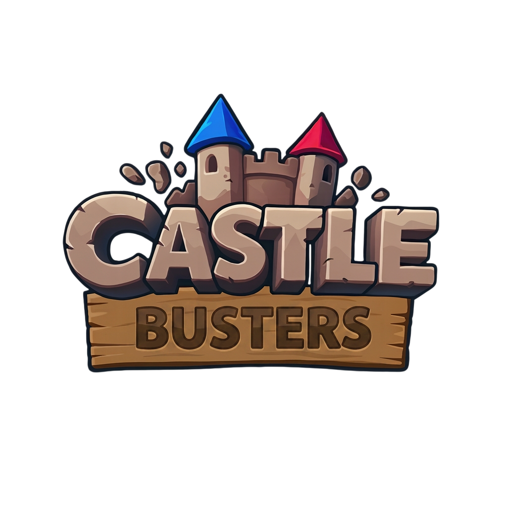
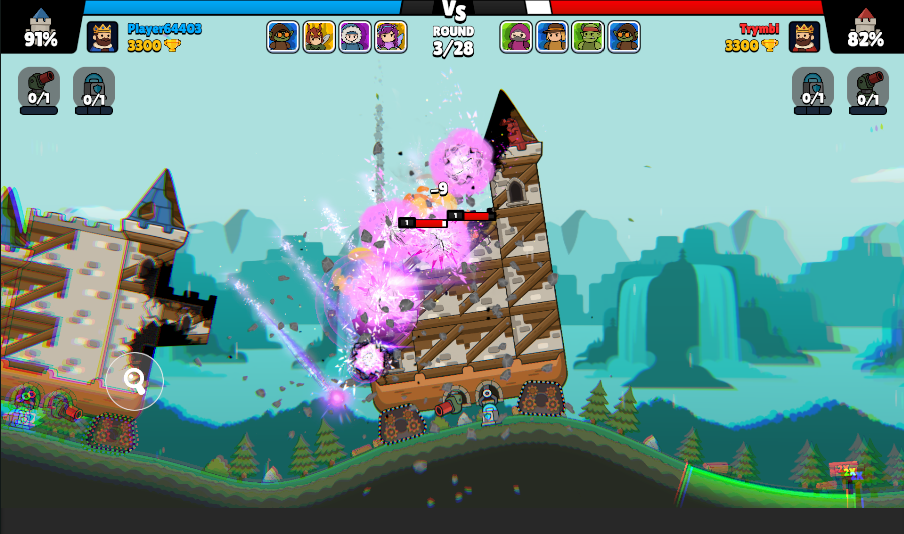
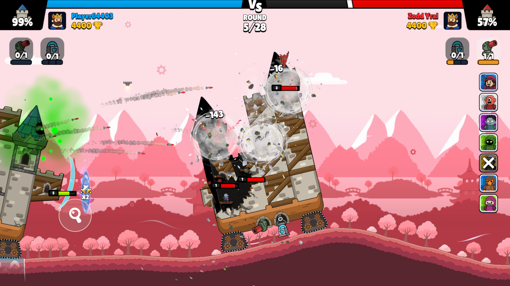

Castle Busters is a real-time PVP castle battler developed by EpiCoro Games. You open a browser tab and you are in — no launcher, no installation, no account. The game makes sense immediately: aim, fire, drive your castle, destroy the enemy fortress. Matches average three to five minutes, no farming phase, no drawn-out grind. Play one match on a lunch break or ten while winding down — Castle Busters meets you wherever you are.
On the surface, Castle Busters is about knocking down buildings. Underneath, it is about reading what is in front of you and acting before your opponent does. Every castle has weak points. Every arena brings a different layout. You are not reducing a health bar — you are collapsing actual structures, and the physics engine renders every crack, every chain reaction, every collapse in real time. A direct hit on a reinforced wall does modest damage. A shot at the junction where two beams meet can bring down an entire wing. The game shows you everything. Whether you pay attention determines whether you climb the leaderboard or stay stuck.
Controls are mouse or touchscreen — aim, launch attacks, drive your castle, manage your squad. But the real skill is not in how you click. It is in when you fire and where you are standing. Every unit fires differently: Bishop throws delayed bombs, Pulsar needs a straight laser line, Wrecker commits to one massive shot with a punishing reload. Firing all eight units on cooldown is how you lose. The players at the top are not faster than you — they are more patient.
Your castle moves, and this is the mechanic new players neglect most. Drive to the flank, bypass frontal defenses. Reverse when a bomb icon appears. A stationary castle is a dead castle. After a win, the Forge lets you craft wheel upgrades, helper items, and structural improvements — Wood through Stone, Iron, Diamond, to Magma. Each tier meaningfully increases durability. Quick clean wins pay out far better than slow slogs, so the incentive structure naturally pushes you toward aggressive, precise play.
The game keeps returning to one question: can you find the weakness and exploit it before your opponent does? Easy to understand, genuinely hard to master — the sweet spot competitive games chase. The physics change how every moment feels. When a shot triggers a chain collapse and half a fortress crumbles, that is not a canned animation — that is the engine calculating structural stress in real time. The player caused that collapse. The game just reported it.


Do not overthink your first loadout. Start with Bishop, Wrecker, and Pulsar — area control, heavy damage, and precision follow-up. Fill the rest with whatever looks interesting. Upgrade your castle walls to Stone before touching offensive upgrades — a dead castle deals zero damage. And do not chase a perfect outcome on your first attempts. Treat every result as information. Castle Busters is built for repeat runs. The match you lose teaches more than the match you dominate.
Replay value comes from breadth. Thirty-plus units means you can experiment with loadouts for months and still find synergies you missed. Copying a meta build will win matches. Building your own approach and refining it through trial and error will make you a better player — and Castle Busters rewards the latter far more. The meta shifts regularly through balance updates, so no strategy stays dominant forever. If you enjoy games where the right answer evolves and you figure it out alongside the community, Castle Busters delivers that experience in a browser tab. Launch fast, test a squad, watch a castle fall.